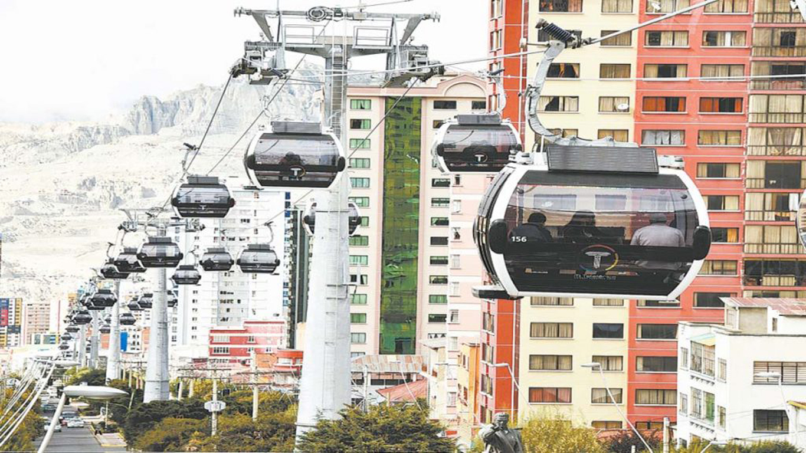
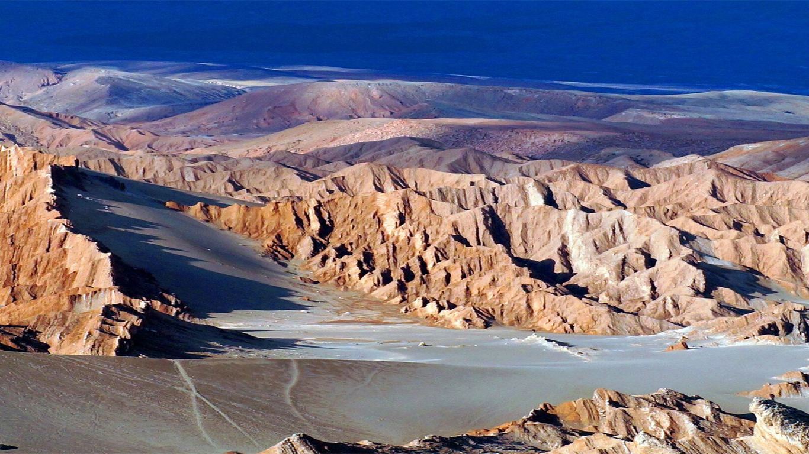
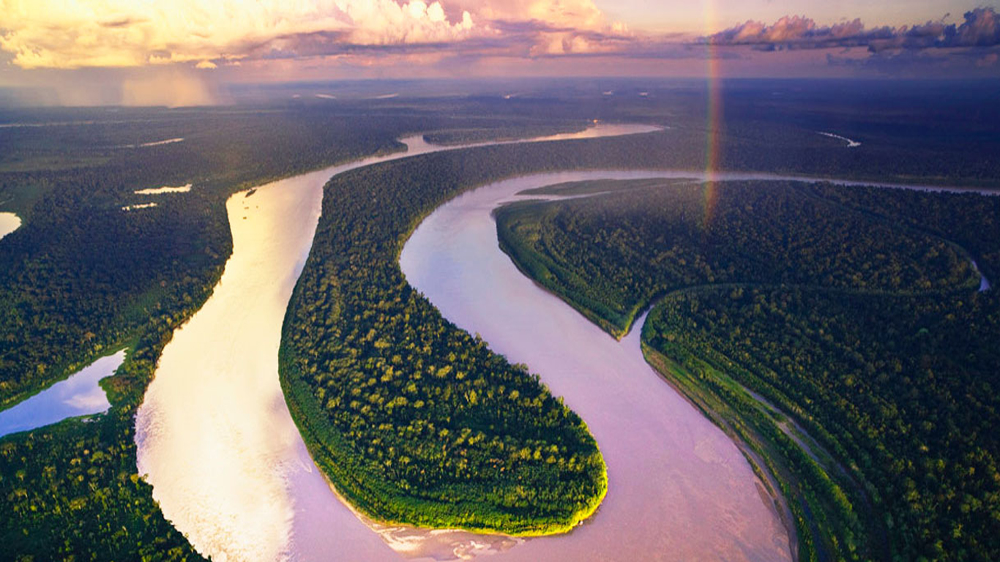
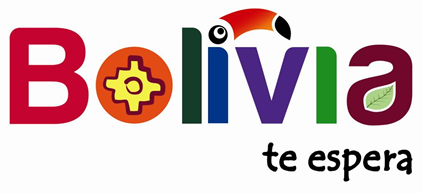

Loading...
Paginas Habilitadas "Menu" Pagina de Jose Andres




Telefericos De la Paz En Bolivia se encuentra «Mi Teleférico», la red de teleféricos urbanos más grande del mundo. Un total de diez líneas conectan las ciudades de La Paz y El Alto y transportan diariamente a unas 300.000 personas. Los teleféricos han formado parte de la vida cotidiana de los habitantes de La Paz y El Alto desde 2014 . mas info en lugares de Interes
Salar de Uyuni (potosi) El Salar de Uyuni, Bolivia, se extiende a lo largo de 10.582 kilómetros cuadrados del Altiplano, es el salar más grande del mundo. Su belleza de otro mundo y su naturaleza surrealista lo han convertido en una atracción muy popular entre los mochileros y turistas. mas info en Lugares de Interes
Valle de la luna (La Paz) El valle de la Luna es un área protegida municipal y formación geológica de la ciudad de La Paz, sede de gobierno de Bolivia. Se encuentra a unos 10 kilómetros del centro urbano de la ciudad y administrativamente pertenece al Macro distrito de Mallasa. Ubicación en Departamento de La Paz (Bolivia). mas info en lugares de Interes
Rio Madidi El río Madidi es un río boliviano perteneciente a la cuenca del río Amazonas, parte de la cuenca alta del río Beni. Tiene una longitud de 350 km, aunque con sus fuentes, alcanza los 595 km, siendo uno de los ríos más largos que discurre íntegramente por el país. mas info en lugared de interes

Bolivia Hoteles
Un hotel es un edificio planificado y acondicionado para otorgar servicios de alojamiento a las personas y que permite a los visitantes sus desplazamientos. Los hoteles proveen a los huéspedes de servicios adicionales como restaurantes, piscinas y guarderías.